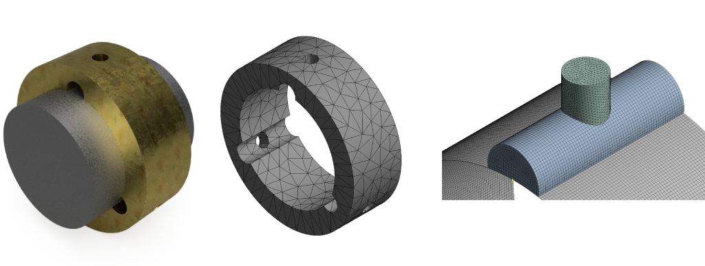
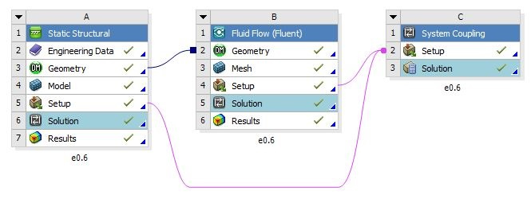

A system coupled between two-phase (liquid and vapour phase) Computational Fluid Dynamics and two-way Fluid Structure Interaction was used to measure the static pressure of the lubricant on the bearing and the shaft, and the geometrical deformation of the fluid and the solid domain.
Three-lobe bearing model and mesh

A complete model including the bearing, shaft, and fluid domain was modelled on Fusion 360 and meshed on Ansys Workbench.
Ansys Workbench Modules

Static structural and fluent modules coupled together using the system coupling module in Ansys Workbench. The bearing and the shaft model was imported into the static structural module and the fluid domain was imported into the fluent module.
Eccentricity ratios and materials used
24 combinations were created using these eccentricity ratios and materials, and analysed and compared.
| Eccentricity ratios |
0.25, 0.4, 0.6, 0.75 |
| Lubricants |
ISO VG32, Water |
| Bearing Materials |
Brass, Steel, Bronze |
| Shaft Materials |
Steel |